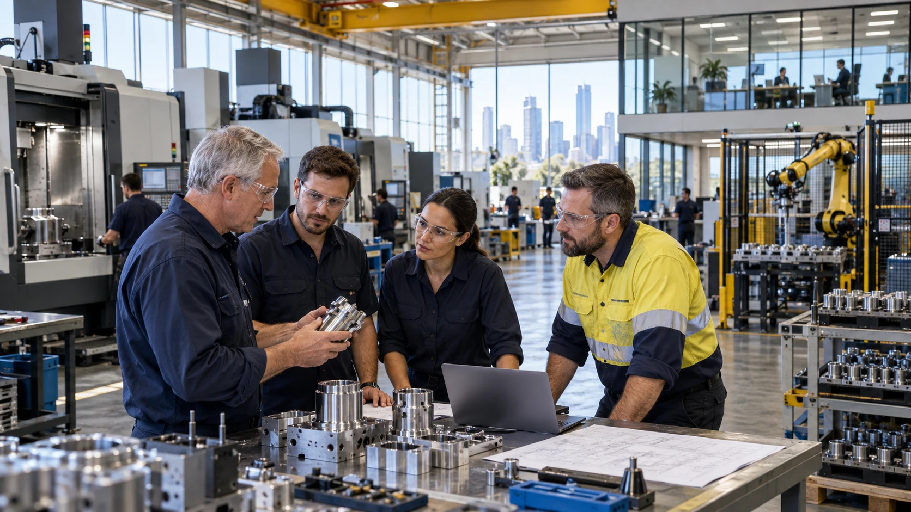

AI in daily operations
Help with scheduling, design, stock, quotes, administration and finding relevant knowledge. Check results against actual business needs.
As established business owners retire and change chapters, younger generations can learn from what they know and take those businesses further. Mutual Futures proposes shared ownership, AI, robotics and XR just-in-time learning as a path from business handovers to wider civilisation upgrades.
An idea to explore together. Read the proposal, try the tools and follow the sources. No sign-up needed.
Public proposalAn owner approaching retirement may hold decades of knowledge about customers, equipment, people and what makes the business work. A fair sale and a paid, agreed handover could support their next chapter while giving younger generations access to that knowledge.
The new owners and staff could then combine it with AI, robotics and XR learning to improve production, services and working life. Shared ownership would connect the resulting value with the people building that next stage.
Preserve what people built. Expand what people can become.

Source trail: P01 · Strange but True P02 · Aura of Intelligence P10 · The Long Game: Grain by Grain
The aim is to help an established business do more with its skills, equipment and knowledge. Technology would be chosen around the work that needs doing, with staff involved in the change.

Help with scheduling, design, stock, quotes, administration and finding relevant knowledge. Check results against actual business needs.
Explore repetitive, strenuous or precise work where machines can help. Plan installation, training, maintenance and safe working arrangements.
Show task instructions, equipment information and remote expert guidance when and where someone needs them. Practise before taking on unfamiliar responsibilities.
The larger ambition is to connect improvements across the systems people depend on: production, food, energy, transport, healthcare, learning and public services. One successful handover could contribute equipment, skills and knowledge that help another.
This is a proposed direction, with each step needing evidence that it works. The purpose is greater shared capability and wealth, with more freedom to learn, create, travel, care and enjoy life.
Explore a fair handover when an owner is ready to retire.
See how members could make decisions and share benefits.
Explore paid learning, different kinds of work and planned time off.
Explore care, community resilience and possibilities for future generations.
Try sample purchase costs, loans and budgets. See what adds up and where money is missing.
Sketch time for work, learning, care, travel and rest. Save a copy for yourself.
See how a power or transport interruption could affect other services in a simple model.
Draft your preferences for how AI and other services may use your information.
This site sets out a proposal and some simple tools for exploring it. There is no operating acquisition fund or announced business purchase behind it. Funding, membership and benefits would need to be worked out with the people involved.
You can read, question and use the tools without signing up. The background papers show how the ideas developed and which questions remain open.
Source trail: P03 · P4A P07 · GAJRA Earth: meeting of minds